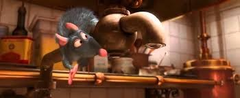
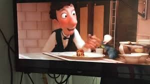

Date de sortie : 2007
Durée : 111min
Pays d’origine : Etats-Unis
Réalisateur : Brad BIRD,
Jan PINKAVA
Production : Walt Disney
Le rat bleu Remy a toujours rêvé d'être un grand cuisinier. Or, par un concours de circonstances, il se retrouve à Paris, près du restaurant du défunt chef Auguste Gusteau. Encouragé par le fantôme de ce dernier, Remy pénètre dans la cuisine et y concocte une soupe délicieuse.Le chef Skinner en conclut alors qu'elle est l'œuvre du timide apprenti Linguini. Désireux de garder sa place, ce dernier décide de faire équipe avec le petit rongeur. Ainsi, caché sous sa toque, Remy le manipule tel un marionnettiste afin de lui faire exécuter d'exquises recettes.Le stratagème fonctionne au point que Linguini gagne le cœur de sa consœur Colette. Entre-temps, l'autoritaire et méfiant Skinner découvre que son apprenti est le fils légitime de Gusteau. Il met alors tout en œuvre pour l'empêcher d'hériter du prestigieux restaurant.
La scène de la soupe :
La scène finale (à ne pas révéler 😊)
Vous pouvez avoir un aperçu de ce film d'animation en visionnant la bande annonce qui vous est proposée ci-dessous :
Accueil Le Roi Lion